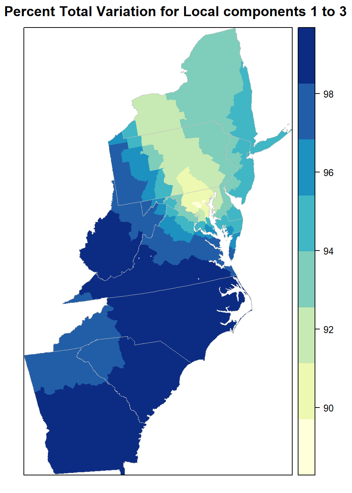

Geographically Weighted Principal Components Analysis (GWPCA)
Principal components analysis (PCA) is commonly used to explain the covariance structure of a (high-dimensional) multivariate data set using only a few components (i.e., provide a low-dimensional alternative). The components are linear combinations of the original variables and provide a better understanding of sources of variation and structure of the data. In geographical settings, standard PCA, in which the components do not depend on location, may be replaced with a GWPCA (Fotheringham et al. 2002; Lloyd 2010a; Harris et al. 2011a), to account for spatial heterogeneity in the structure of the multivariate data. In doing so, GW PCA can identify regions where assuming the same underlying structure in all locations is inappropriate or over-simplistic. GW PCA can assess: (i) how (effective) data dimensionality varies spatially and (ii) how the original variables influence each spatially-varying component.
Load R packages
library(GWmodel) ### GW models
library(sp) ## Data management
library(spdep) ## Spatial autocorrelation
library(gstat) ## Geostatistics
library(RColorBrewer) ## Visualization
library(classInt) ## Class intervals
library(raster) ## spatial data
library(gridExtra) # Multiple plot
library(ggplot2) # Multiple plotLoad Data
The spatial polygon of lung cancer mortality rate and envrionmental data could be found here.
# Define data folder
dataFolder<-"F:\\Spatial_Data_Processing_and_Analysis_R\\Data\\DATA_08\\"
COUNTY<-shapefile(paste0(dataFolder,"COUNTY_ATLANTIC.shp"))
state<-shapefile(paste0(dataFolder,"STATE_ATLANTIC.shp"))
df<-read.csv(paste0(dataFolder,"data_atlantic_1998_2012.csv"), header=T)Create a data frame
df[5] <- lapply(df[5], as.numeric) # Cancer data to numeric
SPDF<-merge(COUNTY,df, by="FIPS")
names(SPDF)## [1] "FIPS" "ID" "x.x" "y.x" "REGION_ID"
## [6] "DIVISION_I" "STATE_ID" "COUNTY_ID" "REGION" "DIVISION"
## [11] "STATE" "COUNTY" "x.y" "y.y" "pop"
## [16] "cancer" "poverty" "smoking" "PM25" "NO2"
## [21] "SO2"polys<- list("sp.lines", as(state, "SpatialLines"), col="grey", lwd=.8,lty=1)
col.palette<-colorRampPalette(c("blue", "sky blue", "green","yellow", "red"),space="rgb",interpolate = "linear")Create a data frame for PCA
mf <- SPDF[, c(17:21)]
names(mf)## [1] "poverty" "smoking" "PM25" "NO2" "SO2"PCA
First we will PCA with scaled data of somoking, poverty PM25, NO2 and SO2.
data.scaled <- scale(as.matrix(mf@data[, 1:5]))
pca <- princomp(data.scaled, cor = FALSE)
(pca$sdev^2 / sum(pca$sdev^2)) * 100## Comp.1 Comp.2 Comp.3 Comp.4 Comp.5
## 55.673035 22.459848 14.203198 7.663919 0.000000pca$loadings##
## Loadings:
## Comp.1 Comp.2 Comp.3 Comp.4 Comp.5
## poverty 0.560 0.124 0.372 0.182 0.707
## smoking 0.560 0.124 0.372 0.182 -0.707
## PM25 0.435 0.369 -0.437 -0.696
## NO2 -0.387 0.368 0.695 -0.482
## SO2 -0.188 0.835 -0.224 0.466
##
## Comp.1 Comp.2 Comp.3 Comp.4 Comp.5
## SS loadings 1.0 1.0 1.0 1.0 1.0
## Proportion Var 0.2 0.2 0.2 0.2 0.2
## Cumulative Var 0.2 0.4 0.6 0.8 1.0GW PCA
Create a data-frame with scaled data
coords <- as.matrix(cbind(SPDF$x.x, SPDF$y.y))
scaled.spdf <- SpatialPointsDataFrame(coords, as.data.frame(data.scaled ))bw.gw.pca <- bw.gwpca(scaled.spdf, vars = colnames(scaled.spdf@data), k = 5, robust = FALSE, adaptive = TRUE)## Adaptive bandwidth(number of nearest neighbours): 412 CV score: 1.313258e-27
## Adaptive bandwidth(number of nearest neighbours): 256 CV score: 1.120212e-27bw.gw.pca## [1] 256gw.pca<- gwpca(scaled.spdf, vars = colnames(scaled.spdf@data), bw=bw.gw.pca, k = 5, robust = FALSE, adaptive = TRUE)Visualized and interpreted GWPCA output
how data dimensionality varies spatially and
how the original variables influence the components.
For the former, the spatial distribution of local PTV for say, the frst two components can be mapped.
# function for calculation pproportion of variance
prop.var <- function(gwpca.obj, n.components) {
return((rowSums(gwpca.obj$var[, 1:n.components]) /rowSums(gwpca.obj$var)) * 100)
}var.gwpca <- prop.var(gw.pca, 3)
mf$var.gwpca <- var.gwpcamypalette.4 <- brewer.pal(8, "YlGnBu")
spplot(mf, "var.gwpca", key.space = "right",
col.regions = mypalette.4, cuts = 7,
sp.layout =list(polys),
col="transparent",
main = "Percent Total Variation for Local components 1 to 3")
We can next visualize how each of the eight variables locally influence a given component, by mapping the `winning variable’ with the highest absolute loading.
loadings.pc1 <- gw.pca$loadings[, , 1]
win.item = max.col(abs(loadings.pc1))
mf$win.item <- win.itemmypalette.4 <- c("lightpink", "blue", "grey", "purple", "green")
spplot(mf, "win.item", key.space = "right",
col.regions = mypalette.4, at = c(1, 2, 3, 4, 5),
main = "Winning variable: highest \n abs. loading on local Comp.1",
sp.layout =list(polys))